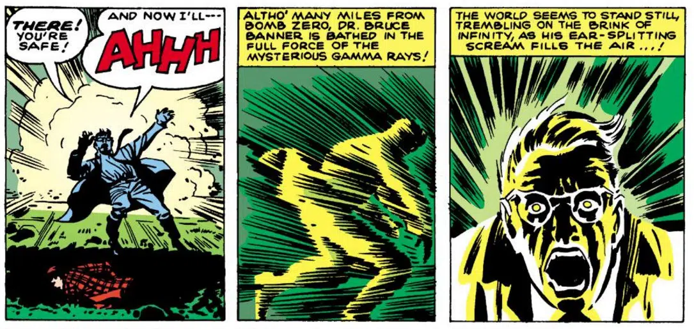
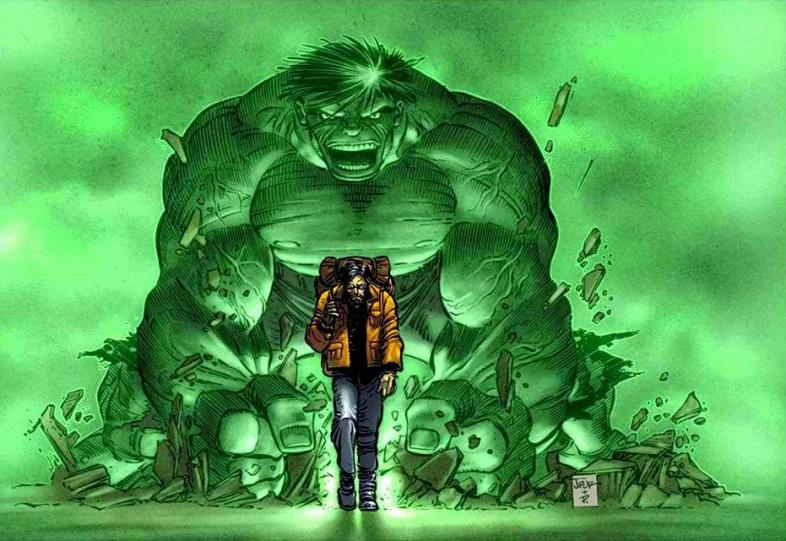

HULK
 March 14, 2024
March 14, 2024
Hulk – Origem, características e poderes do Gigante Esmeralda 🟢
No início da década de 60, a Marvel passou por uma reformulação com as histórias de Stan e Lee e Jack Kirby, a dupla foi responsável por reviver a editora com novos personagens que definiram o futuro dos quadrinhos. Entre eles estava um monstro verde, conhecido como Hulk.
Com a proposta de abordar heróis mais humanos, com dificuldades do dia-a-dia, a dupla se inspirou nos sucessos do Quarteto Fantástico e do Homem-Aranha para desenvolver o novo herói. Por outro lado, ele não deveria ser tão nobre ou sábio como os anteriores.
Ao mesmo tempo, a dupla queria contar a história de alguém que lembrasse uma criatura como Frankenstein ou o Monstro, de O médico e o monstro. Sendo assim, o Hulk nasceu como um cientista capaz de se transformar numa criatura extremamente forte, mas não muito inteligente. O nome veio da palavra em inglês para algo grande, bruto e volumoso.
Logo após a consolidação nos quadrinhos, o personagem ganhou ainda mais força ao integrar o elenco de super-heróis da Marvel no cinema. Desde o início das produções, hulk já ganhou quatro filmes próprios, além de participar dos principais encontros dos Vingadores.
Origem do Hulk 🟩
O alter-ego de Hulk é o cientista Bruce Banner, filho de Brian e Rebecca Banner. Brian, no entanto, sentia muito ciúmes do próprio filho e batia nele com frequência, principalmente quando bebia. Em um ataque de fúria extremo, acabou matando a própria esposa e foi preso. Bruce então, foi morar com a tia, Susan Banner.
Ainda criança, o garoto se apresentou como um prodígio, graças a sua inteligência. Mais tarde, acabou estudando física nuclear no ensino superior e se especializou em radiação gama.
Graças ao seu conhecimento, foi trabalhar no Departamento de Defesa Nuclear dos EUA. Foi nas pesquisas militares na base que conheceu seu grande amor, Betty Ross, e desenvolveu a bomba de raios gama que mudou sua vida.
Poderes e habilidades do Gigante Esmeralda 🍏
Força ilimitada: diferente da super força comum entre heróis, o poder do Hulk vai ainda além. A força dele aumenta em proporção direta a sua raiva, de forma que ele já foi capaz de destruir um asteroide com duas vezes o tamanho da Terra.
Resistência e vigor ilimitados: para acompanhar a força, o personagem também evolui a resistência e o condicionamento físico de forma ilimitada. Isso porque seu corpo precisa ser capaz de resistir a seu próprio poder, para que ele não morra.
Fator de cura: dificilmente a resistência do personagem faz com que ele seja ferido, mas quando isso acontece, ele é capaz de se regenerar. Por causa da habilidade, o Hulk é imune a todas as doenças da Terra e tem o envelhecimento desacelerado.